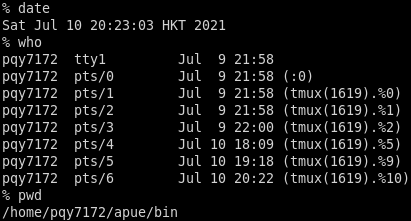
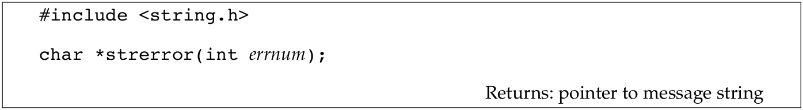

Unix系统概要
本文介绍Unix系统编程环境．
1 输入和输出
文件描述符
文件描述符通常是一个小而非负的整数由内核用来识别被进程访问的文件．每当打开一个存在的文件或创建新的文件时，内核都会返回一个文件描述符，用户也可以使用这个文件描述符来读或写文件．
标准输入，标准输出以及标准错误
传统上，当一个新的程序运行时，shell都会打开三个描述符，标准输入，标准输出以及标准错误．如果没有什么特殊的处理，比如就像简单的ls命令，那么这三个描述符都会连接到终端．许多shell一般都提供重定向它们中一个或所有到文件中，比如:
ls > file.list
执行ls命令，并且将它的标准输出重定向到叫file.list的文件中．
无缓冲I/O
无缓存I/O由函数open，read，write，lseek以及close提供，这些函数都要依赖文件描述符而工作．
Example
如果可以读出标准输入而写入到标准输出，下面的程序示例在Unix系统上可以拷贝任何常规文件：
#include "apue.h" #define BUFFSIZE 4096 int main(int argc, char *argv[]) { int n; char buf[BUFFSIZE]; while ((n = read(STDIN_FILENO, buf, BUFFSIZE)) > 0) if (write(STDOUT_FILENO, buf, n) != n) err_sys("write error"); if (n < 0) err_sys("read error"); return 0; }
包含在apue.h中的unistd.h文件，里面有两个常量就是STDIN_FILENO以及STDOUT_FILENO，都是POSIX标准的一部分．这个头文件还包括许多Unix系统服务的函数原型，比如这里调用的read以及write函数．
定义在unistd.h里常量STDIN_FILENO以及STDOUT_FILENO定义了标准输入和标准输出的文件描述符，分别为0和1，使用这个名字可读性更好．
后面还会详细介绍BUFFSIZE常量的细节，其不同的大小会影响到程序的效率．
read函数返回我们读取到的字节数，这个数值又用来作为write的写入字节数．当读取到文件的末尾时，read返回0并且程序停止，如果read有错误的话，就会返回-1．许多系统在有错误时都是返回-1．
将这个程序编译为标准的名字（a.out），并且如下执行：
./a.out > data
标准输入是终端，标准输出重定向到了data文件，当然标准错误还是终端．如果输出文件不存在，默认情况下shell会创建它．程序会拷贝输入到标准输出，又重定向到文件data，输入end-of-file（通常就是Control-D）字符时程序可以停止．
而下面的命令，可以将infile拷贝到outfile．
./a.out < infile > outfile
后面还会更细节的讨论无缓冲I/O函数．
标准I/O
标准I/O函数给无缓冲I/O函数提供了一个接口．使用标准I/O函数就可以不用去选择最优的buffer大小，比如上述程序中的BUFFSIZE．标准I/O函数也会简化对于多行输入的处理，比如fgets函数，一次读取一整行，作为对比，read是读取指定数目的字节数．
最常见的标准I/O函数就是printf了．
Example
下面程序的功能类似前面的程序．
#include "apue.h" int main(int argc, char *argv[]) { int c; while ((c = getc(stdin)) != EOF) if (putc(c, stdout) == EOF) err_sys("output error"); if (ferror(stdin)) err_sys("input error"); return 0; }
getc一次读取一个字符，而这个字符又被putc写入到标准输出．标准I/O常量stdin和stdout定义在stdio.h里，用来引用到标准输入和标准输出．
2 程序与进程
程序
程序是存在于磁盘上某个目录下的可执行文件．程序可以被七个exec函数调用读入到内存里并且由内核执行．
进程以及进程ID
一个程序的执行实体叫进程．某些操作系统采用任务（task）来指代正在执行的程序．
UNIX系统保证每个进程都有一个唯一的数字标识符，叫做进程ID．进程ID总是非负的整数．
Example
下面的程序可以打印出进程ID：
#include "apue.h" int main(int argc, char *argv[]) { printf("helllo world from process ID %ld\n", (long)getpid()); return 0; }
运行上面的程序：
~/.../bin(master)$ ./1.6 helllo world from process ID 14055 ~/.../bin(master)$ ./1.6 helllo world from process ID 14066
当这个程序运行时，它会调用getpid来获得进程的ID．后面会看到，getpid返回的是pid_t类型．这个类型的精确大小可能无法知道，但是标准会担保它在一个long型之内．这样转换成最大的类型，可以提高程序的可移植性．
进程控制
有三个主要的函数用于进程控制：fork，exec以及waitpid．exec有六个变体，但是通常都是叫它们exec．
Example
下面的例子，演示了进程控制功能．下面这个类似shell的程序，从标准输入中读入命令，并且执行命令．
#include "apue.h" #include <sys/wait.h> int main(int argc, char *argv[]) { char buf[MAXLINE]; pid_t pid; int status; printf("%% "); while (fgets(buf, MAXLINE, stdin) != NULL) { if (buf[strlen(buf) - 1] == '\n') buf[strlen(buf) - 1] = 0; if ((pid = fork()) < 0) { err_sys("fork error"); } else if (pid == 0) { execlp(buf, buf, (char*)0); err_ret("couldn't execute: %s", buf); exit(127); } if ((pid = waitpid(pid, &status, 0)) < 0) err_sys("waitpid error"); printf("%% "); } return 0; }
这三十行代码有以下几点需要注意：
- 用fets来从标准输入中一次读一行．当输入end-of-file字符时，通常就是Control-D，作为一行的第一个字符时，fgets返回null空指针，循环就结束了，进程就结束了．后面还会介绍一些特殊的终端字符，文件结束符，删除一个字符，删除整行等等．
- 由fgets返回的行，以newline字符结尾，使用strlen计算字符串的长度，使用null字节替代新行．这是因为execlp函数期待一个null结尾的参数，而不是新行结尾的参数．
- 调用fork去创建新进程，新进程是调用者的复制．这样调用者是父进程，而新创建的进程叫做子进程．随后fork返回非负的进程ID给父进程，这个ID就是子进程的pid，而返回0给子进程．因为fork创建新进程，把这叫做由父进程调用一次，但是返回了两次，分别返回给父进程和子进程．
- 在子进程里，调用execlp去执行由标准输入读到的命令．这会替代子进程为新的可执行文件．fork和exec的组合在某些操作系统上叫做产生新进程．后面还会介绍更多．
- 子进程调用execlp去执行新的程序文件了，而父进程会等待子进程结束．这通过调用waitpid来做到，通过pid来指明等待哪个进程结束，这里是子进程的pid．waitpid也会返回子进程的结束状态到status变量里．但是在这个简单的程序里，我们未用这个变量做任何事情．可以用这个值来检测子进程是如何结束的．
- 有一个基本的限制就是我们不能传递参数到这个程序．举个例子，我们不能传递目录名．ls只能列出当前工作目录的内容．为了做到可以传递参数，需要解析输入的行，通常以空格或tab来分割参数，然后传递给execlp函数．
运行这个函数有下图的结果：

注意这里的提示符是%.
线程和线程ID
通常，一个进程仅有一个线程来控制．但是某些问题如果有多个线程会更加容易解决，因为这些线程可以在问题的不同部分同时计算．此外，多线程也可以利用多处理器的平行性．
在一个进程中的线程共享地址空间，文件描述符，栈以及进程相关的属性．每个线程在它自己的栈上执行，当然每个线程也可以访问相同进程中的其它线程的栈．因为这些线程可以访问相同的内存，对于共享数据的访问需要同步来避免不一致性．
与进程类似，线程由ID标识，也就是线程ID．然而线程ID是局部于进程的．在一个进程中的线程ID在另外的进程中可能是没有意义的．
3 错误处理
当调用一个UNIX系统时出现了错误，通常这个系统调用返回一个负值，并且设置整数变量errno，通过这个值可以知道失败的原因．比如，如果一切顺利的话，open系统返回一个非负的文件描述符，如果错误发生的话，就返回-1．open有15个可能的errno值，比如文件不存在，权限问题等．而另外一些返回指针的函数，以返回NULL来表征错误．
文件errno.h定义了errno符号以及一些errno可以使用的常量．这些常量都以字符E开始．举个例子，如果errno等于EACCESS，表明有权限问题，比如打开文件时权限不够.
使用errno有以下两个原则，一是如果没有错误发生，它的值是不会清除的．所以当系统调用返回小于0的错误值时，就应该查看这个errno的值．二是errno的值不会被系统调用设置为0，并且在errno.h里页没有一个错误常量的值为0．
有两个函数可以用来打印错误信息．

这个函数，将errnum的值（通常就是errno）映射到一个错误信息串，并且返回指向这个串的指针．
而perror函数可以可以将错误信息打印到标准错误上．
它输出由msg指向的字符串，其后是冒号，然后是空格，然后是对应于errno的错误信息，最后是换行符．
Example
下面的例子演示了如何使用这两个函数．
#include "apue.h" #include <errno.h> int main(int argc, char *argv[]) { fprintf(stderr, "EACCES: %s\n", strerror(EACCES)); errno = ENOENT; perror(argv[0]); return 0; }
运行有输出：
~/.../bin(master)$ ./1.8 EACCES: Permission denied ./1.8: No such file or directory
注意程序里将运行程序的名字argv[0]也就是1.8作为参数传给了perror．这是UNIX系统上的惯例了，通 过这种方式，如果程序以pipeline的方式执行的话，比如：
prog1 < inputfile | prog2 | prog3 > outputfile
就可以知道是哪个特定的程序输出了特定的错误信息．
错误恢复
定义在errno.h中的错误可以分为两类，一是致命错误，二是非致命．致命错误是无法恢复的，能做的就是打印错误信息到屏幕或者是记录到日志文件，然后退出．非致命错误，可以以一种更健壮的方式来处理．许多非致命的错误都是暂时的，比如资源短缺，系统不那么繁忙时可能就好了．
跟资源相关的非致命性错误包括EAGAIN，ENFFILE，ENOBUFS，ENOLCK，ENOSPC，EWOULDBLOCK以及ENOMEM．当共献资源在使用时遇到ENOBUSY也可以看作非致命错．中断一个慢syscall时EINTR也可以看作非致命错误．
对于资源相关的错误恢复操作就是延迟并且过小段时间再尝试．举个例子，如果有错误表明网络不可用，通常的操作就是延迟一段时间并且重建连接．某些应用还会使用指数回退算法，每次出错都会等待更长的时间．
4 用户识别
用户ID
user ID是来自password文件的条目，它是一个数值值，向系统表明用户的身份．user ID通常每个用户都是唯一的．后面会看到内核会使用这些ID来决定某些操作是否被允许．
user ID为0的叫做root或超级用户，root用户可以跳过大多数权限检查，某些函数限制在root用户才能做．
/etc/passwd文件也指明了用户所属的group ID．组通常用来收集属于同一个项目或部门的用户信息．这允许在组员间分享文件等资源．后面会看到，可以将一个文件的权限设置为只有组内成员可以访问，而组外的成员不行．
组文件/etc/group（group file）可以将组名转换为数字的group ID．
Example
下面的例子程序打印出user ID和group ID．
#include "apue.h" int main(int argc, char *argv[]) { printf("uid = %d, gid = %d\n", getuid(), getgid()); return 0; }
上面的程序通过getuid和getgid来获取用户ID以及组ID．运行结果如下：
~/.../bin(master)$ ./1.9 uid = 1000, gid = 1000
5 信号
信号是一种用来通知进程某些条件已经发生的技术．比如，如果进程除以0的话，名为SIGFPE的信号会发送给进程．一个进程对于一个信号通常有三种选择：
- 忽略信号．对于硬件异常来说，这个选项是不推荐的．比如除0异常，引用内存超出了进程的地址空间，因为这个结果是未定义的．
- 采取默认行为．对于除0异常，默认行为就是终止进程．
- 提供一个信号发生时可供调用的函数．通过这样一个自己提供的函数，就可以知道信号何时发生，并按我们希望的方式去处理．
许多情况都会生成信号，比如Ctrl-C键等．除了摁键，kill函数也可以发送信号．
Example
之前写过一个简单的shell例子程序，如果调用这个程序，并且按下中断键，进程就会终止．进程没有告诉内核做点其它的事情，所以默认的行为就是进程终止．
为了捕获这个信号，需要调用signal函数，指明当SIGINT信号发生时需要调用的函数名字，在下面的例子里这个函数是sig_int．当它被调用时，就会打印一行信息和新的提示符．
#include "apue.h" #include <sys/wait.h> static void sig_int(int); int main(int argc, char *argv[]) { char buf[MAXLINE]; pid_t pid; int status; if (signal(SIGINT, sig_int) == SIG_ERR) err_sys("signal error"); printf("%% "); while (fgets(buf, MAXLINE, stdin) != NULL) { if (buf[strlen(buf) - 1] == '\n') buf[strlen(buf) - 1] = 0; if ((pid = fork()) < 0) { err_sys("fork error"); } else if (pid == 0) { execlp(buf, buf, (char*)0); err_ret("couldn't execute: %s", buf); exit(127); } if ((pid = waitpid(pid, &status, 0)) < 0) err_sys("waitpid error"); printf("%% "); } return 0; } void sig_int(int signo) { printf("interrupt\n%% "); }
后面还会介绍更多的关于signal．